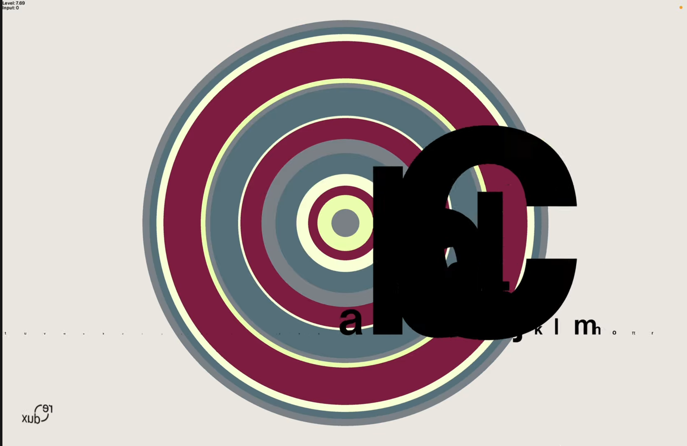
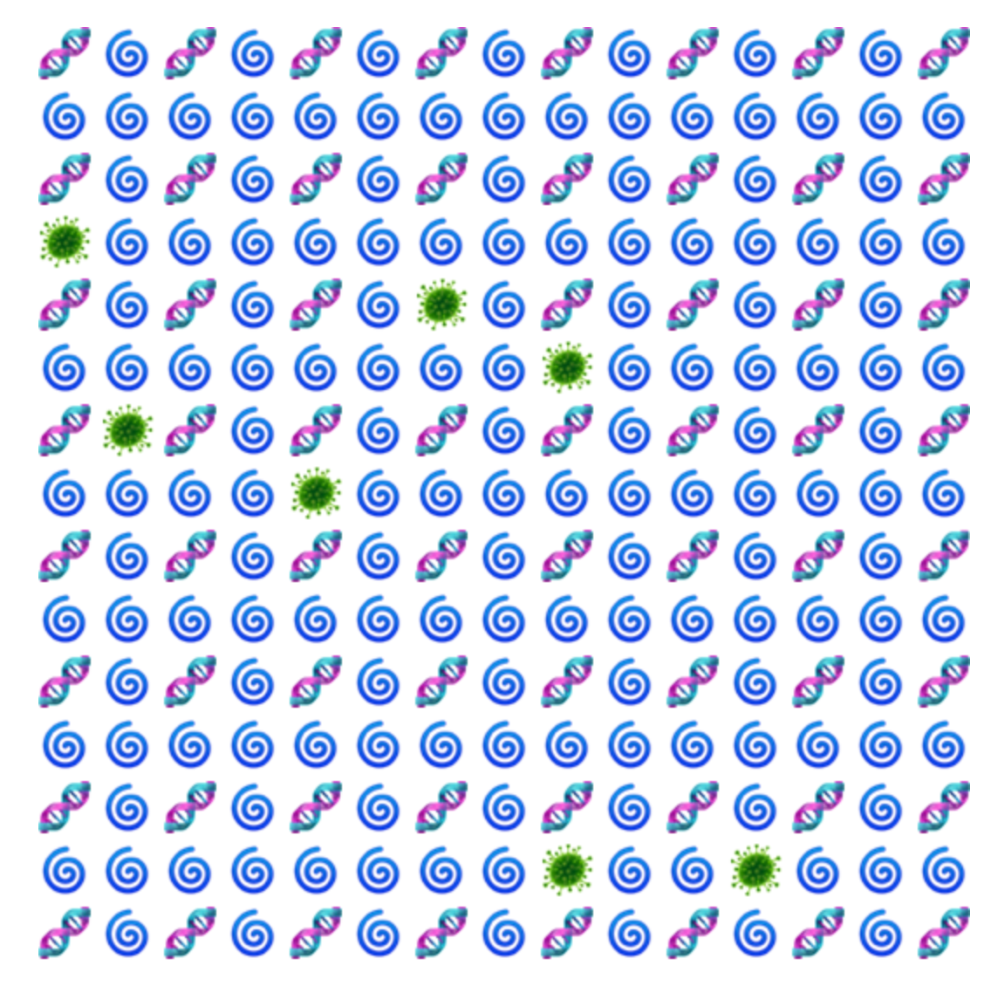
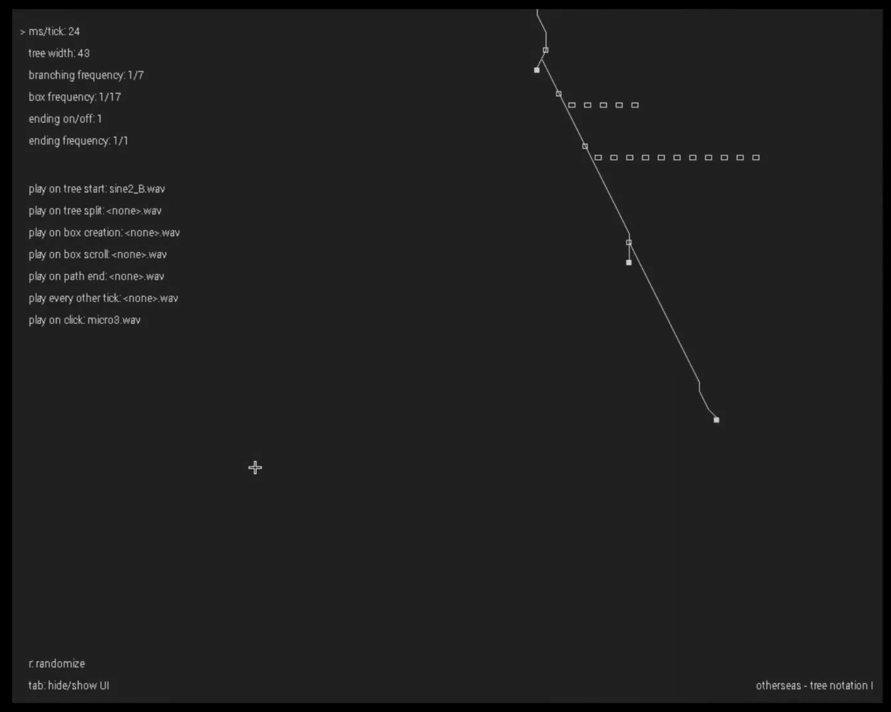

Everything (2025)

"everything" is an audio visualizer program I made for
Redux
in August 2025.
Java, Processing
the ruined temple (2024)

"the ruined temple" is an interactive world simulation specific to my website.
JavaScript
Tree-notation I (2022)

Tree-notation I is an audiovisual project I made in 2022. I was thinking about how music could escape the linear temporal grid.
C++, SDL